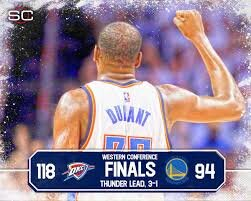

In 2010, the young Oklahoma City Thunder, with the youngster trio of Kevin Durant, Russell Westbrook and James Harden managed to get the 8th seed on the western conference and faced up against the eventual champions Los Angeles Lakers, lead by Kobe Bryant. The Thunder pushed the series to 6 games, losing on a game-winner tip in by Pau Gasol. Game 6 took place at what was then called the Ford Center. Despite the loss, the Oklahoma City home crowd gave the team a standing ovation. Those young guys won over Oklahoma City, they earned the respect from Lakers players, they gained the worlds attention.
So comes 2011. OKC finished 55-27, good enough for 4th on the West and that sets up a date against the Denver Nuggets, which the Thunder win in 5. Behind a good chunck of momemtum, they find their next opponent in the Memphis Grizzlies. The Grizzlies had finished the season in 8th place on the conference, but that did not make them an easy opponent, as the top seeded San Antonio found out in their 4-2 series loss to the Memphis team. The Thunder had a formidable challenge in front of them.
Coming of a series in which he avegered 21.5 points, Zach Randolph lead the Grizzlies to a game 1 road win with 34 points. Still, journalists still believed the Thunder would go on to win game 2 and even the series. And they did. Which meant they were going to Memphis tied. On game 3, the Grizzlies prevailed in overtime, which meant game 4 was a must win for the Thunder once more. And once again, win they did. It was not easy, though. They had to play through 63 minutes, due to 3 overtimes, but in the end, they came out of Memphis with an even series. On game 5, with the home crowd energy, against a tired Memphis team, the Thunder won by 17, which meant they were one game away from the first conference finals in franchise history, only 3 years after moving from Seattle. Game 6, in Memphis: Grizzlies by 12. If they want to go to the WCF, they must win the first game 7 in franchise history. Ford center takes center stage. All eyes watching who would meet the Mavericks on a 7 game series to determine the finalist. And Kevin Durant came to play. He ended up with 39 points along with the first playoff triple-double from his teammate Russell Westbrook and the Thunder moved on to the conference finals.
After a grueling 7 game series win against the Grizzlies, the 2nd seeded Oklahoma City Thunder were up against the 3rd seeded Los Angeles Clippers for a chance at the conference finals. After spliting the first two games in OKC, the Thunder went on to win game 3, but then blew a huge fourth quarter lead that evened the series at 2 a piece. In comes game 5. A crucial game, in Oklahoma City. Whoever won it, would have two close out opportunities. During the game, the LA team held the upper hand from pretty much wire to wire. With 1:08 left and a 5 point lead, Blake Griffin misses a free throw, but the Clippers come out with the rebound and extend the lead to 7. Words can´t make this moment justice, so just watch the video:
The Thunder end up winning the series 4-2 after that, winning 104-98 and setting up a date against the San Antonio Spurs on the Western conference finals.
This is, by far, the toughest to write about. Yet, at that moment, it was one of the best moments in the history of this franchise. Coming in to the season, the Warriors were the NBA champions in a season OKC did not make the playoffs due to injury. That season had a plethora of amazing moments, but none bigger than the Warriors winning a record breaking 73 games during the regular season. Most fans assumed that we were destined to see them battle the team that was up there with them all season long, the San Antonio Spurs.
Well, everyone but the Thunder. On the western conference semis, after gettin demolished in game 1, OKC ended up pulling out a 4-2 series win over the Spurs, setting up a huge Western finals battle: The splash brothers, Steph Curry and Klay Thompson Vs Kevin Durant and Russell Westbrook.
The first game, inside Oracle Arena, saw OKC pull out an incredible 6 point win behind 53 points from Russ and KD combined. That made a lot of people raise some eyebrows at a possible OKC run. Game 2, was what most people expected from the series, Golden State dominance. But still, the Thunder had gone inside Oracle Arena and not only came out alive, but came out with an even series back to OKC. And it didn´t stop there, as in game 3, OKC won by 28 points really making many doubters into believers.
And so comes game 4. A crucial game. If the Thunder wins, they go up 3-1, a lead that most teams dream of having, specially against a team like those Warriors. Golden State, on the other hand, knew how important that game was. Win game 4, get homecourt advantage back, win the series. Otherwise, give the Thunder 3 chances to close the series.
Unfortunately for the Warriors, they once again seemed outmatched. If there were any doubters left, Westbrook and his 36 points triple-double, made them believers. They had them. All they needed was one win and they had 3 games to do so. They do that and they have a date with Lebron James in the NBA finals. Well, as most of you probably know the rest of this story will not be written on the best moments, it will be written on the worst ones.
Other Thunder central content:
Thunder´s salary cap situationTop 5 worst moments in Thunder history